How To Use This Package
Mauricio Vargas
2026-02-18
This example is inspired after the visualizations from Hausmann et al. (2014) with some ggplot additions. The original vignette was largely improved from what I learned in Network Analysis taught at ICPSR 2023 by Dr. Sarah Shugars.
World Trade and Per-Capita GDP
library(economiccomplexity)
# partial view of trade matrix
head(world_trade_avg_1998_to_2000)## # A tibble: 6 × 3
## country product value
## <chr> <chr> <dbl>
## 1 afg 0011 30068
## 2 afg 0012 16366
## 3 afg 0111 19273
## 4 afg 0112 893
## 5 afg 0113 350
## 6 afg 0116 1561# partial view of gdp vector
head(world_gdp_avg_1998_to_2000)## # A tibble: 6 × 2
## country value
## <chr> <dbl>
## 1 abw 19185
## 2 ago 1540
## 3 alb 1433
## 4 and 27765
## 5 arb 3312
## 6 are 43082Balassa Index
You can obtain Balassa Index with balassa_index().
bi <- balassa_index(world_trade_avg_1998_to_2000)
# partial view of index
n <- seq_len(5)
bi[n, n]## 0011 0012 0013 0014 0015
## afg 0 0 0 0 0
## ago 0 0 0 0 0
## aia 0 0 0 0 0
## alb 0 0 0 0 0
## and 1 0 0 0 1Another possibility is to obtain Balassa Index without discretization.
bi_dec <- balassa_index(world_trade_avg_1998_to_2000, discrete = FALSE)
# partial view of index
bi_dec[n, n]## 0011 0012 0013 0014 0015
## afg 0.2312238 0.285438688 0.000000000 0.00000000 0.000000000
## ago 0.1777917 0.087436319 0.002076625 0.00139056 0.001106041
## aia 0.0000000 0.002581853 0.000000000 0.00000000 0.000000000
## alb 0.0000000 0.000000000 0.000000000 0.01582754 0.073011368
## and 2.4825815 0.550954168 0.000000000 0.48208017 3.815013019Complexity Measures
You can compute complexity indexes (e.g. such as the Economic
Complexity Index and Product Complexity Index) by using
complexity_measures(). The calculations methods are
fitness (default), reflections, eigenvalues.
See (Mariani et al. 2015) for the
methodological details.
The eigenvalues also calls the reflections methods in order to correct the index sign in some special cases when the correlation between the output from both methods is negative.
Complexity-Fitness
com_fit <- complexity_measures(bi)
# partial view of indexes
com_fit$complexity_index_country[n]## afg ago aia alb and
## 0.78605655 0.03999516 1.05645538 1.24261128 1.37321261com_fit$complexity_index_product[n]## 0011 0012 0013 0014 0015
## 0.7538883 0.7491391 2.3018690 0.9903918 1.3120378Reflections
com_ref <- complexity_measures(bi, method = "reflections")
# partial view of indexes
com_ref$complexity_index_country[n]## afg ago aia alb and
## -0.5788151 -1.7710696 1.4074821 -0.1754989 1.0738736com_ref$complexity_index_product[n]## 0011 0012 0013 0014 0015
## -0.66255104 -1.62169896 -0.07449483 0.20554723 0.15848849Eigenvalues
com_eig <- complexity_measures(bi, method = "eigenvalues")
# partial view of indexes
com_eig$complexity_index_country[n]## afg ago aia alb and
## -0.5764283 -1.7770752 1.4090414 -0.1732606 1.0772452com_eig$complexity_index_product[n]## 0011 0012 0013 0014 0015
## -0.66657613 -1.62657599 -0.08149436 0.19917280 0.14935653Proximity
Proximity matrices are used to create projections
e.g. (country-country and product-product networks) for bipartite
networks. Using proximity() is straightforward.
pro <- proximity(bi)
# partial view of proximity matrices
pro$proximity_country[n, n]## afg ago aia alb and
## afg 1.00000000 0.015873016 0.181818182 0.19689119 0.192513369
## ago 0.01587302 1.000000000 0.006993007 0.01554404 0.005347594
## aia 0.18181818 0.006993007 1.000000000 0.16580311 0.251336898
## alb 0.19689119 0.015544041 0.165803109 1.00000000 0.310880829
## and 0.19251337 0.005347594 0.251336898 0.31088083 1.000000000pro$proximity_product[n, n]## 0011 0012 0013 0014 0015
## 0011 1.0000000 0.3658537 0.1707317 0.2439024 0.2682927
## 0012 0.3658537 1.0000000 0.2500000 0.2250000 0.2500000
## 0013 0.1707317 0.2500000 1.0000000 0.2500000 0.1200000
## 0014 0.2439024 0.2250000 0.2500000 1.0000000 0.2250000
## 0015 0.2682927 0.2500000 0.1200000 0.2250000 1.0000000Projections
The projections() function is designed to use
igraph for the internal computations and also to pass
proximity-based networks to igraph, ggraph or
export to Cytoscape by saving the output as csv/tsv.
library(igraph)
net <- projections(pro$proximity_country, pro$proximity_product)
# partial view of projections
E(net$network_country)[n]## + 5/484 edges from 2b8efff (vertex names):
## [1] zaf--zwe tza--zmb tza--uga tuv--wlf tuv--umiE(net$network_product)[n]## + 5/1505 edges from 6c9bde9 (vertex names):
## [1] 8981--8982 8946--9510 8922--8932 8921--8922 8852--8959We can also use igraph to see how many edges are in the
networks nd also the networks’ density, diameter and transitivity.
ecount(net$network_country)## [1] 484ecount(net$network_product)## [1] 1505edge_density(net$network_country, loops = FALSE)## [1] 0.01903638edge_density(net$network_product, loops = FALSE)## [1] 0.00489081diameter(net$network_country, directed = FALSE, unconnected = FALSE)## [1] 7.845477diameter(net$network_product, directed = FALSE, unconnected = FALSE)## [1] 12.78569transitivity(net$network_country, type = "global")## [1] 0.6151159transitivity(net$network_product, type = "global")## [1] 0.4457284Centrality measures
We calculate the degree centrality of every node in the network and plot a histogram of these values. The drawback is that the network was trimmed until obtaining an average of 4 links per edge (or arcs per node), therefore the computation and histograms reflect a biased distribution.
deg_country <- degree(net$network_country)
deg_product <- degree(net$network_product)
# country with the highest degree centrality
deg_country[which.max(deg_country)]## svn
## 25# product with the highest degree centrality
deg_product[which.max(deg_product)]## 8421
## 33In the same way, we can compute the betweenness, cloness and eigenvector centrality of the networks.
bet_country <- betweenness(net$network_country)
bet_product <- betweenness(net$network_product)
clo_country <- closeness(net$network_country)
clo_product <- closeness(net$network_product)
eig_country <- eigen_centrality(net$network_country)$vector
eig_product <- eigen_centrality(net$network_product)$vector
# country with the highest betweenness centrality
bet_country[which.max(bet_country)]## ken
## 16718# product with the highest betweenness centrality
bet_product[which.max(bet_product)]## 7412
## 53858.5# country with the highest closeness centrality
clo_country[which.max(clo_country)]## ken
## 0.002555277# product with the highest closeness centrality
clo_product[which.max(clo_product)]## 7412
## 0.0005298341# country with the highest eigenvector centrality
eig_country[which.max(eig_country)]## cze
## 1# product with the highest eigenvector centrality
eig_product[which.max(eig_product)]## 8434
## 1Following the analysis, we can verify that the largest connected component is the same as the original networks in this case.
# sub-networks of the largest connected component
lcc_countries <- induced_subgraph(
net$network_country,
which(components(net$network_country)$membership ==
which.max(components(net$network_country)$csize))
)
lcc_products <- induced_subgraph(
net$network_product,
which(components(net$network_product)$membership ==
which.max(components(net$network_product)$csize))
)
# is this the same as the original networks?
ecount(lcc_countries) == ecount(net$network_country)## [1] TRUEvcount(lcc_countries) == vcount(net$network_product)## [1] FALSEdeg2_countries <- degree(lcc_countries)
deg2_products <- degree(lcc_products)
bet2_countries <- betweenness(lcc_countries)
bet2_products <- betweenness(lcc_products)
clo2_countries <- closeness(lcc_countries)
clo2_products <- closeness(lcc_products)
eig2_countries <- eigen_centrality(lcc_countries)$vector
eig2_products <- eigen_centrality(lcc_products)$vector
all.equal(
deg_country[which.max(deg_country)],
deg2_countries[which.max(deg2_countries)]
)## [1] TRUEall.equal(
deg_product[which.max(deg_product)],
deg2_products[which.max(deg2_products)]
)## [1] TRUEall.equal(
bet_country[which.max(bet_country)],
bet2_countries[which.max(bet2_countries)]
)## [1] TRUEall.equal(
bet_product[which.max(bet_product)],
bet2_products[which.max(bet2_products)]
)## [1] TRUEall.equal(
clo_country[which.max(clo_country)],
clo2_countries[which.max(clo2_countries)]
)## [1] TRUEall.equal(
clo_product[which.max(clo_product)],
clo2_products[which.max(clo2_products)]
)## [1] TRUEall.equal(
eig_country[which.max(eig_country)],
eig2_countries[which.max(eig2_countries)]
)## [1] TRUEall.equal(
eig_product[which.max(eig_product)],
eig2_products[which.max(eig2_products)]
)## [1] TRUEK-core and backbone
We can identify the k-core of the networks for an arbitray value “k”.
k <- 4
# identify the core of the network
core_country <- coreness(net$network_country, mode = "all")
core_product <- coreness(net$network_product, mode = "all")
# identify the nodes in the core
kcore_country <- induced_subgraph(
net$network_country,
which(core_country >= k)
)
kcore_product <- induced_subgraph(
net$network_product,
which(core_product >= k)
)
V(kcore_country)$name## [1] "aut" "bel" "bgr" "bih" "blr" "che" "chn" "cze" "deu" "dnk" "esp" "est"
## [13] "fin" "fra" "gbr" "grc" "hkg" "hrv" "hun" "ind" "ita" "jpn" "ken" "lbn"
## [25] "ltu" "mkd" "nld" "pak" "pol" "prt" "rom" "scg" "svk" "svn" "swe" "tur"
## [37] "ukr" "usa"V(kcore_product)$name## [1] "0142" "0223" "0240" "0252" "0484" "0565" "0583" "0586" "0620" "0730"
## [11] "0980" "5332" "5334" "5335" "5417" "5419" "5542" "5543" "5821" "5825"
## [21] "5989" "6123" "6210" "6289" "6343" "6354" "6359" "6416" "6417" "6418"
## [31] "6421" "6422" "6424" "6428" "6518" "6546" "6575" "6581" "6583" "6584"
## [41] "6589" "6618" "6631" "6632" "6633" "6635" "6648" "6794" "6911" "6912"
## [51] "6921" "6924" "6940" "6954" "6973" "6975" "6991" "6996" "6997" "6998"
## [61] "7139" "7211" "7212" "7213" "7219" "7259" "7269" "7281" "7368" "7369"
## [71] "7371" "7372" "7412" "7413" "7416" "7423" "7429" "7432" "7436" "7439"
## [81] "7449" "7452" "7492" "7493" "7499" "7711" "7732" "7742" "7757" "7758"
## [91] "7783" "7810" "7821" "7849" "7868" "7919" "8121" "8122" "8211" "8212"
## [101] "8219" "8421" "8422" "8423" "8424" "8429" "8431" "8432" "8433" "8434"
## [111] "8435" "8439" "8441" "8442" "8443" "8451" "8452" "8459" "8461" "8462"
## [121] "8463" "8464" "8465" "8472" "8510" "8720" "8742" "8922" "8931" "8932"
## [131] "8939" "8997"We can also identify the backbone of the networks.
# identify the backbone of the network
bbn_country <- delete_vertices(net$network_country, which(core_country < k))
bbn_product <- delete_vertices(net$network_product, which(core_product < k))
bbn_country## IGRAPH bcb8e3b UNW- 38 283 --
## + attr: name (v/c), weight (e/n)
## + edges from bcb8e3b (vertex names):
## [1] swe--usa svn--usa svn--tur svn--swe svk--usa svk--swe svk--svn scg--ukr
## [9] scg--tur scg--svn scg--svk rom--ukr rom--tur rom--svn rom--svk rom--scg
## [17] prt--tur prt--svn prt--svk prt--scg prt--rom pol--usa pol--tur pol--swe
## [25] pol--svn pol--svk pol--scg pol--rom pol--prt pak--tur nld--usa nld--swe
## [33] nld--svk mkd--tur mkd--scg mkd--rom mkd--prt mkd--pak ltu--ukr lbn--tur
## [41] lbn--mkd ken--tur ken--scg ken--lbn jpn--usa jpn--swe jpn--svn ita--usa
## [49] ita--tur ita--swe ita--svn ita--svk ita--prt ita--pol ita--nld ita--jpn
## [57] ind--tur ind--scg ind--rom ind--pak ind--ken ind--ita hun--usa hun--tur
## + ... omitted several edgesbbn_product## IGRAPH 4a4828d UNW- 132 709 --
## + attr: name (v/c), weight (e/n)
## + edges from 4a4828d (vertex names):
## [1] 8922--8932 8720--8939 8720--8742 8472--8997 8465--8510 8465--8472
## [7] 8464--8472 8464--8465 8463--8510 8463--8472 8463--8465 8463--8464
## [13] 8462--8472 8462--8465 8462--8464 8462--8463 8461--8472 8461--8465
## [19] 8461--8463 8459--8472 8459--8465 8459--8464 8459--8463 8459--8462
## [25] 8452--8472 8452--8465 8452--8464 8452--8463 8452--8462 8452--8461
## [31] 8452--8459 8451--8997 8451--8472 8451--8465 8451--8464 8451--8463
## [37] 8451--8462 8451--8459 8451--8452 8443--8997 8443--8472 8443--8465
## [43] 8443--8464 8443--8463 8443--8462 8443--8459 8443--8452 8443--8451
## + ... omitted several edgesCommunity detection
We can identify the communities of the networks with a fast greedy algorithm.
com_country <- cluster_fast_greedy(net$network_country)
com_product <- cluster_fast_greedy(net$network_product)
all.equal(vcount(net$network_country), length(com_country$membership))## [1] TRUEall.equal(vcount(net$network_product), length(com_product$membership))## [1] TRUE# number of communities
length(unique(com_country$membership))## [1] 12length(unique(com_product$membership))## [1] 41Complexity Outlook
Both the Complexity Outlook Index and Complexity Outlook Gain are
obtained after the complexity_outlook() function.
co <- complexity_outlook(
economiccomplexity_output$balassa_index,
economiccomplexity_output$proximity$proximity_product,
economiccomplexity_output$complexity_measures$complexity_index_product
)
# partial view of complexity outlook
co$complexity_outlook_index[n]## afg ago aia alb and
## 103.948610 9.962401 122.311158 152.107317 151.295380co$complexity_outlook_gain[n, n]## 0011 0012 0013 0014 0015
## afg 0.8615531 0.7613878 0.7537907 1.0961458 0.8143851
## ago 0.9681802 0.8436855 0.8219918 1.2151040 0.8883146
## aia 0.8339114 0.7475080 0.7247198 1.0425043 0.7671877
## alb 0.7979779 0.7199705 0.7132042 1.0170093 0.7636545
## and 0.0000000 0.7118512 0.6829531 0.9987236 0.0000000Productivy Levels
The productivity_levels() dataset follows the
definitions from Hausmann et al. (2014)
and Hausmann, Hwang, and Rodrik
(2005).
I don’t have a per-capita GDP dataset for the Galactic Federation, so I’ll create simulated data for the example.
pl <- productivity_levels(
world_trade_avg_1998_to_2000,
world_gdp_avg_1998_to_2000
)
# partial view of productivity levels
pl$productivity_level_country[n]## ago alb and are arg
## 8223.607 6343.341 13783.485 10207.679 9269.670pl$productivity_level_product[n]## 0011 0012 0013 0014 0015
## 7915.893 3986.371 11375.710 6273.428 17628.950Integration with ggplot2
We can plot the distributions for the centrality measures.
library(ggplot2)
deg_country <- data.frame(
country = names(deg_country),
deg = deg_country
)
deg_product <- data.frame(
product = names(deg_product),
deg = deg_product
)
ggplot(deg_country) +
geom_histogram(aes(x = deg), bins = 20, fill = "#002948") +
theme_minimal(base_size = 13) +
labs(title = "Degree Centrality Distribution for Countries")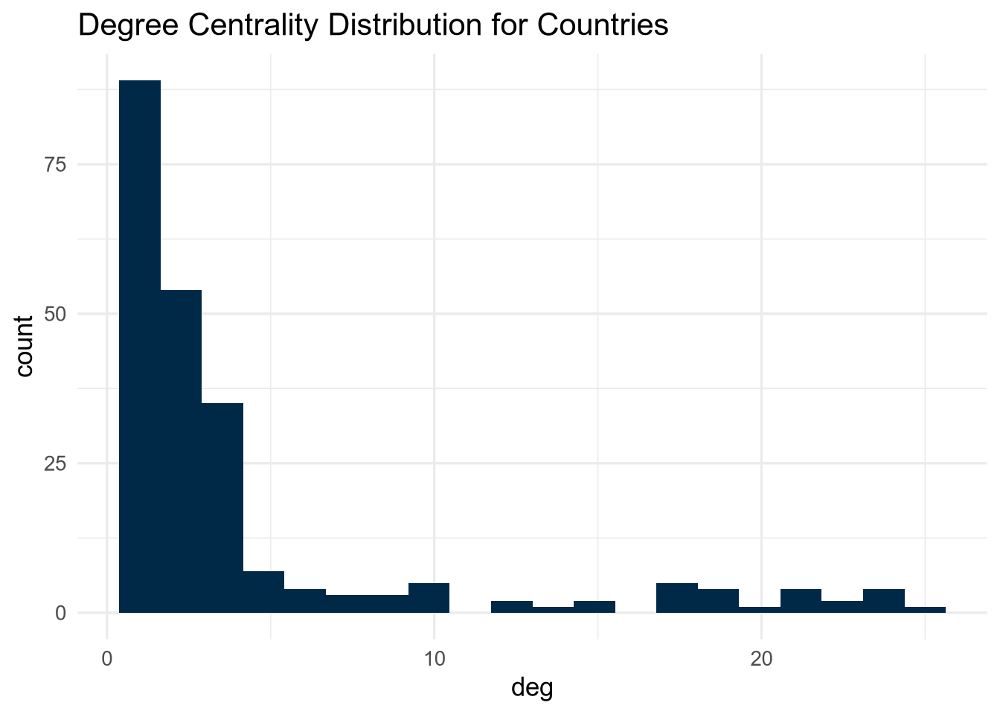
ggplot(deg_product) +
geom_histogram(aes(x = deg), bins = 20, fill = "#002948") +
theme_minimal(base_size = 13) +
labs(title = "Degree Centrality Distribution for Products")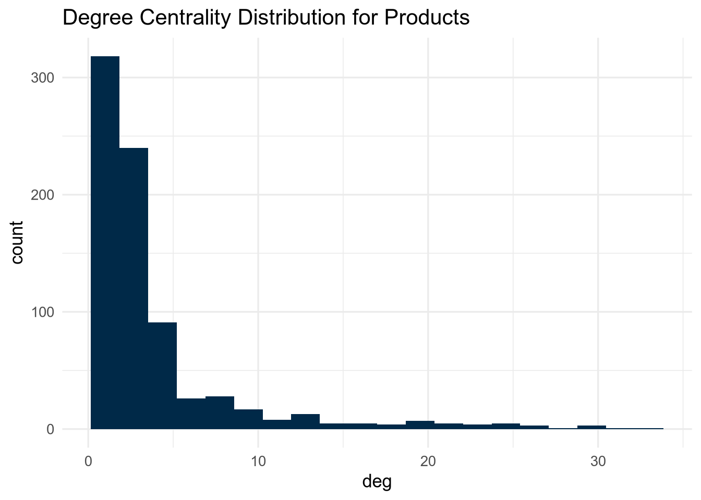
bet_country <- data.frame(
country = names(bet_country),
bet = bet_country
)
bet_product <- data.frame(
product = names(bet_product),
bet = bet_product
)
clo_country <- data.frame(
country = names(clo_country),
clo = clo_country
)
clo_product <- data.frame(
product = names(clo_product),
clo = clo_product
)
eig_country <- data.frame(
country = names(eig_country),
eig = eig_country
)
eig_product <- data.frame(
product = names(eig_product),
eig = eig_product
)
ggplot(bet_country) +
geom_histogram(aes(x = bet), bins = 20, fill = "#002948") +
theme_minimal(base_size = 13) +
labs(title = "Betweenness Centrality Distribution for Countries")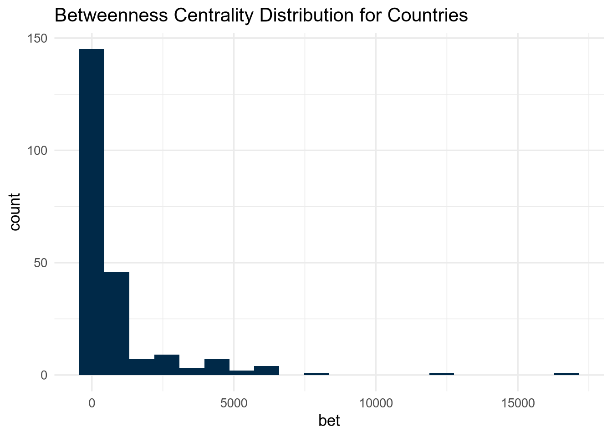
ggplot(bet_product) +
geom_histogram(aes(x = bet), bins = 20, fill = "#002948") +
theme_minimal(base_size = 13) +
labs(title = "Betweenness Centrality Distribution for Products")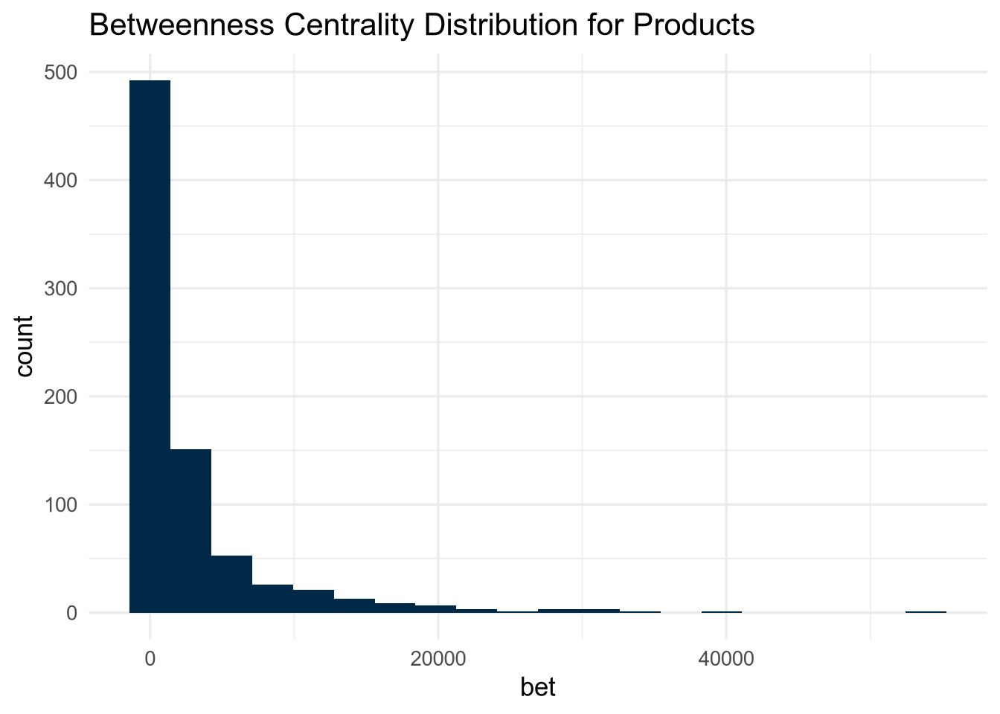
ggplot(clo_country) +
geom_histogram(aes(x = clo), bins = 20, fill = "#002948") +
theme_minimal(base_size = 13) +
labs(title = "Closeness Centrality Distribution for Countries")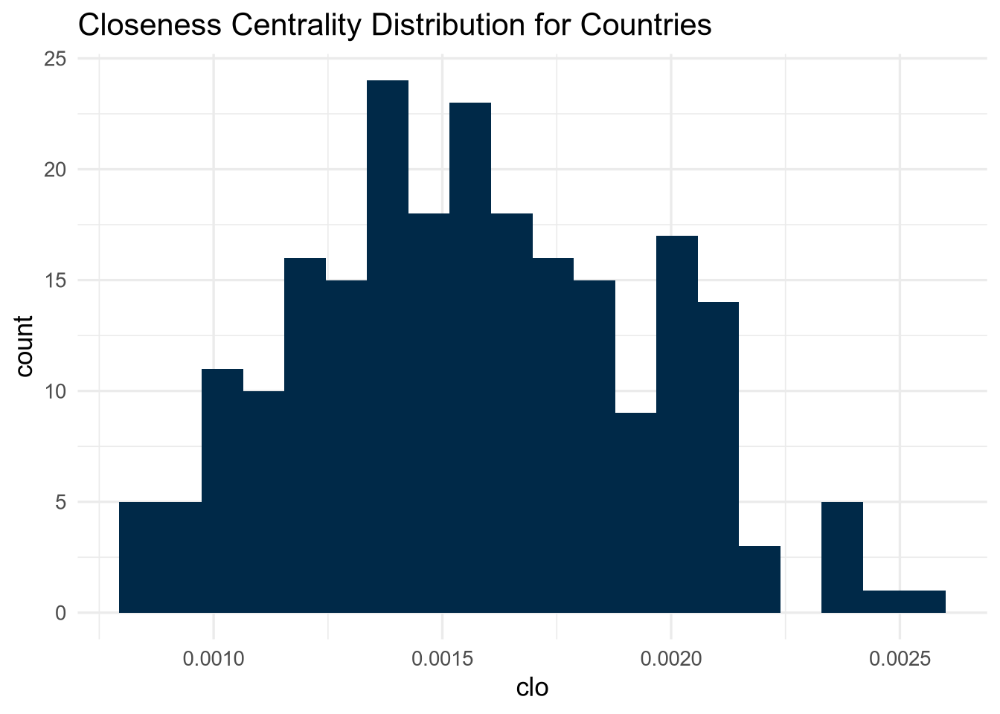
ggplot(clo_product) +
geom_histogram(aes(x = clo), bins = 20, fill = "#002948") +
theme_minimal(base_size = 13) +
labs(title = "Closeness Centrality Distribution for Products")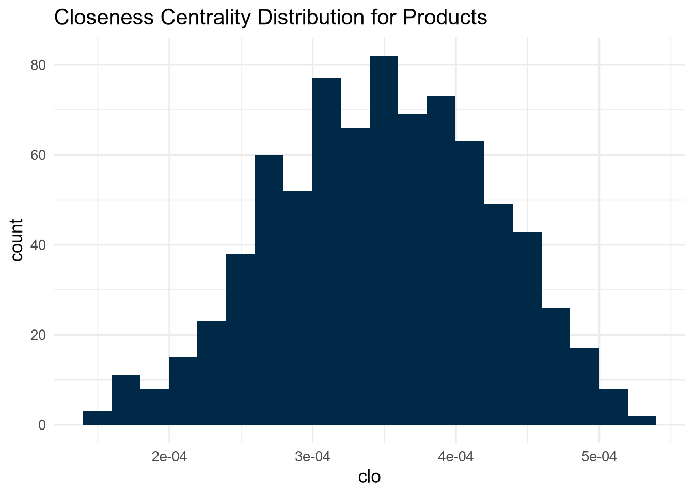
ggplot(eig_country) +
geom_histogram(aes(x = eig), bins = 20, fill = "#002948") +
theme_minimal(base_size = 13) +
labs(title = "Eigenvector Centrality Distribution for Countries")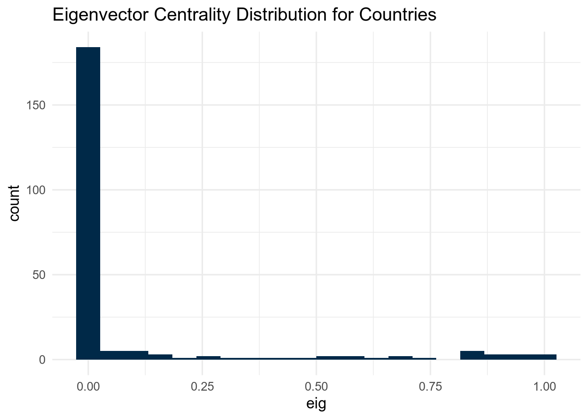
ggplot(eig_product) +
geom_histogram(aes(x = eig), bins = 20, fill = "#002948") +
theme_minimal(base_size = 13) +
labs(title = "Eigenvector Centrality Distribution for Products")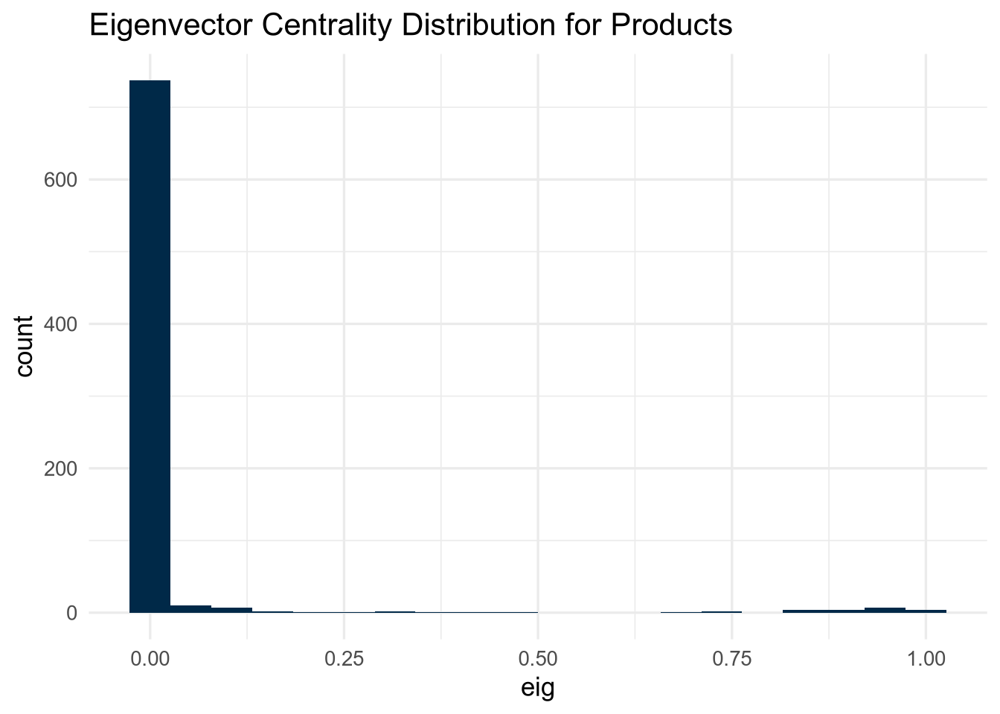
Integration with ggraph
We start by plotting the network of countries. Each node will be sized by its total exports.
set.seed(200100)
library(ggraph)
aggregated_countries <- aggregate(
world_trade_avg_1998_to_2000$value,
by = list(country = world_trade_avg_1998_to_2000$country),
FUN = sum
)
aggregated_countries <- setNames(
aggregated_countries$x,
aggregated_countries$country
)
V(net$network_country)$size <- aggregated_countries[
match(V(net$network_country)$name,
names(aggregated_countries))
]
ggraph(net$network_country, layout = "kk") +
# geom_edge_link(aes(edge_width = weight), edge_colour = "#a8a8a8") +
geom_edge_link(edge_colour = "#a8a8a8") +
geom_node_point(aes(size = size), color = "#002948") +
geom_node_text(aes(label = name), size = 2, vjust = 2.2) +
ggtitle("Proximity Based Network Projection for Countries") +
theme_void()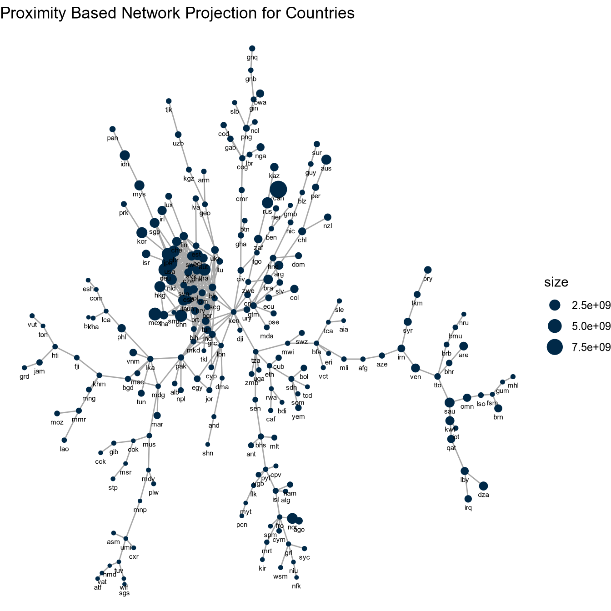
Now we can highlight the countries with the highest centralities from the previous part.
# Paint svn, ken and cze in yellow and the rest of the world in blue
V(net$network_country)$color <- rep(
"Rest of the World",
length(V(net$network_country)$size)
)
V(net$network_country)$color[match(
c("svn", "ken", "cze"),
V(net$network_country)$name
)] <- "Slovakia, Kenia and Czech Republic"
ggraph(net$network_country, layout = "kk") +
geom_edge_link(edge_colour = "#a8a8a8") +
geom_node_point(aes(size = size, color = color)) +
geom_node_text(aes(label = name), size = 2, vjust = 2.2) +
ggtitle("Proximity Based Network Projection for Countries") +
theme_void() +
scale_colour_manual(values = c(
"Slovakia, Kenia and Czech Republic" = "#fac704",
"Rest of the World" = "#002948"
))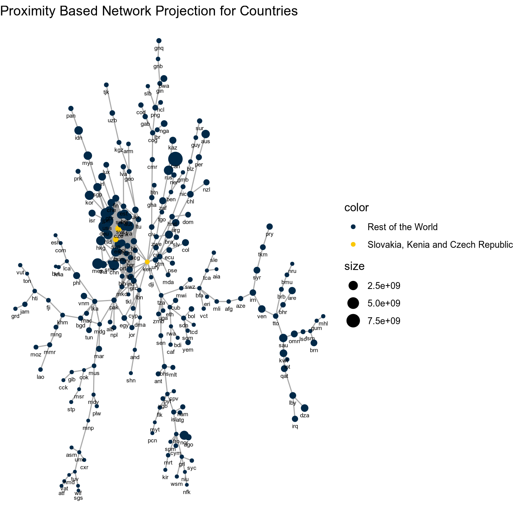
We can also plot the network of products. Each node will be sized by
its total exports. Because the product names are large, we display the
product codes instead. You can read about the codes here and
if you need the codes in R, you can use the tradestatistics
package, which can be installed from CRAN.
set.seed(200100)
aggregated_products <- aggregate(
world_trade_avg_1998_to_2000$value,
by = list(country = world_trade_avg_1998_to_2000$product),
FUN = sum
)
aggregated_products <- setNames(
aggregated_products$x,
aggregated_products$country
)
V(net$network_product)$size <- aggregated_products[
match(V(net$network_product)$name,
names(aggregated_products))
]
ggraph(net$network_product, layout = "kk") +
geom_edge_link(edge_colour = "#a8a8a8") +
geom_node_point(aes(size = size), color = "#002948") +
geom_node_text(aes(label = name), size = 2, vjust = 2.2) +
ggtitle("Proximity Based Network Projection for Products") +
theme_void()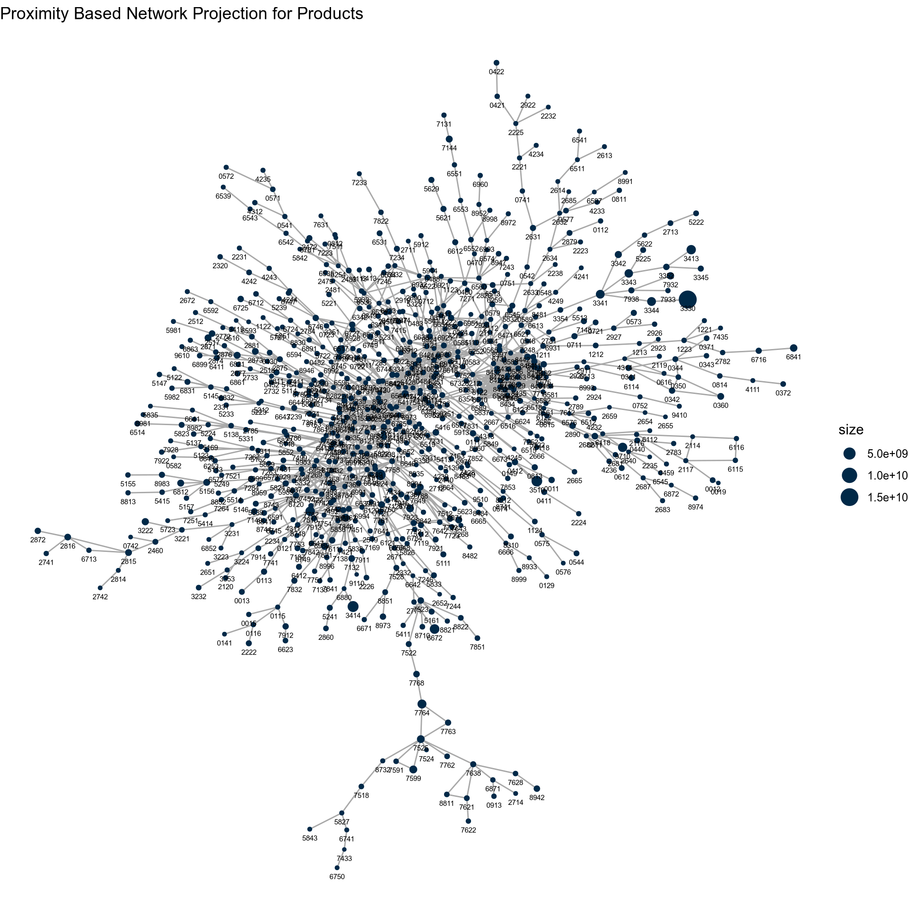
Now we can highlight the products with the highest centralities from the previous part.
# Paint 8421, 7412 and 8434 in yellow and the rest of the products in blue
V(net$network_product)$color <- rep(
"Rest of the Products",
length(V(net$network_product)$size)
)
V(net$network_product)$color[match(
c("8421", "7412", "8434"),
V(net$network_product)$name
)] <- "8421, 7412 and 8434"
ggraph(net$network_product, layout = "kk") +
geom_edge_link(edge_colour = "#a8a8a8") +
geom_node_point(aes(size = size, color = color)) +
geom_node_text(aes(label = name), size = 2, vjust = 2.2) +
ggtitle("Proximity Based Network Projection for Products") +
theme_void() +
scale_colour_manual(values = c(
"8421, 7412 and 8434" = "#fac704",
"Rest of the Products" = "#002948"
))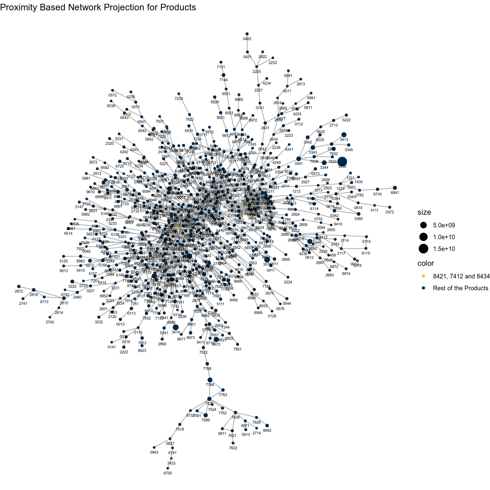
The communities detected in the previous part can be used to improve the plots.
# Paint by community
# for each vertex, replace X with the community number
set.seed(200100)
V(net$network_country)$color2 <- rep(NA, length(V(net$network_country)$size))
for (i in seq_along(V(net$network_country)$color2)) {
com_i <- as.character(com_country$membership[i])
# if len(com$membership[i]) = 1, append a 0
if (nchar(com_i) == 1) {
com_i <- paste0("0", com_i)
}
V(net$network_country)$color2[i] <- paste0("Community ", com_i)
}
my_colors <- c(
"#74c0e2", "#406662", "#549e95", "#8abdb6", "#bcd8af",
"#a8c380", "#ede788", "#d6c650", "#dc8e7a", "#d05555",
"#bf3251", "#872a41"
)
ggraph(net$network_country, layout = "kk") +
geom_edge_link(edge_colour = "#a8a8a8") +
geom_node_point(aes(size = size, color = color2)) +
geom_node_text(aes(label = name), size = 2, vjust = 2.2) +
ggtitle("Proximity Based Network Projection for Countries") +
theme_void() +
scale_colour_manual(values = my_colors)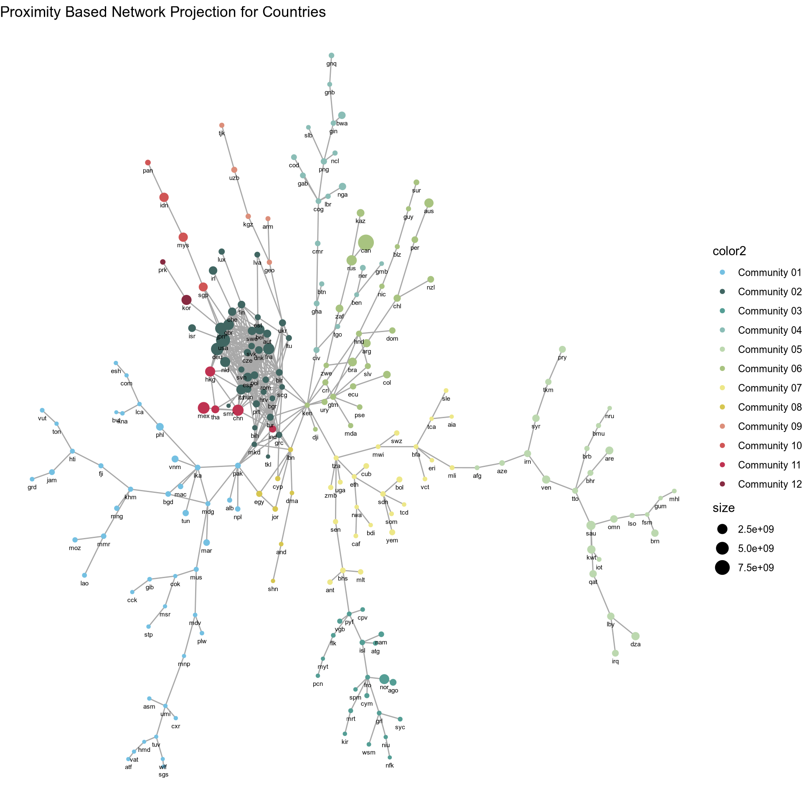
For products, the challenge is to obtain 41 distinguisable colors.
# Paint by community
# for each vertex, replace X with the community number
set.seed(200100)
V(net$network_product)$color2 <- rep(NA, length(V(net$network_product)$size))
for (i in seq_along(V(net$network_product)$color2)) {
com_i <- as.character(com_product$membership[i])
# if len(com$membership[i]) = 1, append a 0
if (nchar(com_i) == 1) {
com_i <- paste0("0", com_i)
}
V(net$network_product)$color2[i] <- paste0("Community ", com_i)
}
my_colors_2 <- c(
"#74c0e2", "#406662", "#549e95", "#8abdb6", "#bcd8af",
"#a8c380", "#ede788", "#d6c650", "#dc8e7a", "#d05555",
"#bf3251", "#872a41", "#74c0e2", "#406662", "#549e95",
"#8abdb6", "#bcd8af", "#a8c380", "#ede788", "#d6c650",
"#dc8e7a", "#d05555", "#bf3251", "#872a41", "#74c0e2",
"#406662", "#549e95", "#8abdb6", "#bcd8af", "#a8c380",
"#ede788", "#d6c650", "#dc8e7a", "#d05555", "#bf3251",
"#872a41", "#74c0e2", "#406662", "#549e95", "#8abdb6",
"#bcd8af"
)
ggraph(net$network_product, layout = "kk") +
geom_edge_link(edge_colour = "#a8a8a8") +
geom_node_point(aes(size = size, color = color2)) +
geom_node_text(aes(label = name), size = 2, vjust = 2.2) +
ggtitle("Proximity Based Network Projection for Products") +
theme_void() +
scale_colour_manual(values = my_colors_2)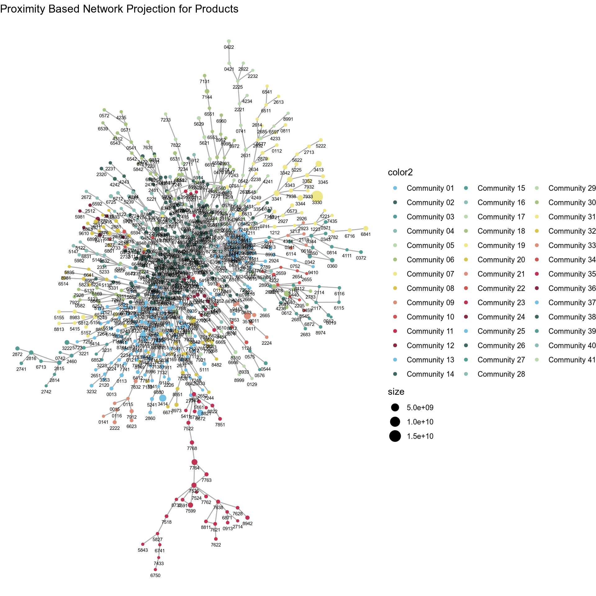
We can try to obtain clusters in a different way, by pre-specifying the number of communities. Because this has some arbitrary element, we can specify a number equal to the sections in the Harmonised System, which is 21 plus the unspecified products.
set.seed(200100)
my_colors_3 <- c(
"#74c0e2", "#406662", "#549e95", "#8abdb6", "#bcd8af",
"#a8c380", "#ede788", "#d6c650", "#dc8e7a", "#d05555",
"#bf3251", "#872a41", "#993f7b", "#7454a6", "#a17cb0",
"#d1a1bc", "#a1aafb", "#5c57d9", "#1c26b3", "#4d6fd0",
"#7485aa", "#d3d3d3"
)
com_product <- cluster_fluid_communities(
net$network_product,
no.of.communities = 22
)
V(net$network_product)$color2 <- rep(NA, length(V(net$network_product)$size))
for (i in seq_along(V(net$network_product)$color2)) {
com_i <- as.character(com_product$membership[i])
# if len(com$membership[i]) = 1, append a 0
if (nchar(com_i) == 1) {
com_i <- paste0("0", com_i)
}
V(net$network_product)$color2[i] <- paste0("Community ", com_i)
}
ggraph(net$network_product, layout = "kk") +
geom_edge_link(edge_colour = "#a8a8a8") +
geom_node_point(aes(size = size, color = color2)) +
geom_node_text(aes(label = name), size = 2, vjust = 2.2) +
ggtitle("Proximity Based Network Projection for Products") +
theme_void() +
scale_colour_manual(values = my_colors_3)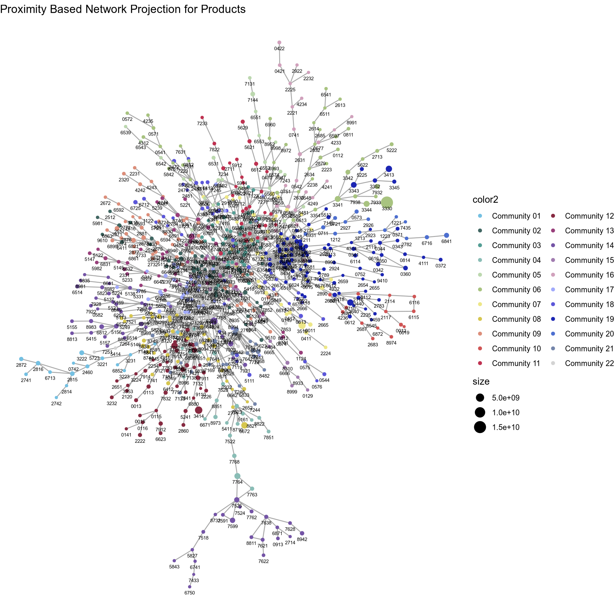